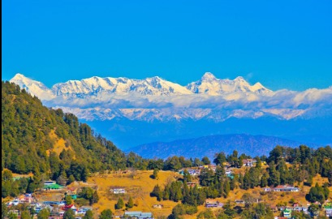

ABOUT MUKTESHWAR
Mukteshwar is home to a 350-year-old Shiva Temple
known as Mukteshwar Dham and is famous for its proximity
to adventurous activities and breathtaking views of the
Himalayas. Mukteshwar's verdant paths and winding alleys
make it a great place to go hiking, as well as rock climbing
and rappelling.
Mukteshwar is also famous for its breezy waterfalls such as
The Bhalu Ghaad, Tarikhet waterfalls, Rudradhari waterfall
and Dhokaney waterfall.
TAKE A LOOK :-
